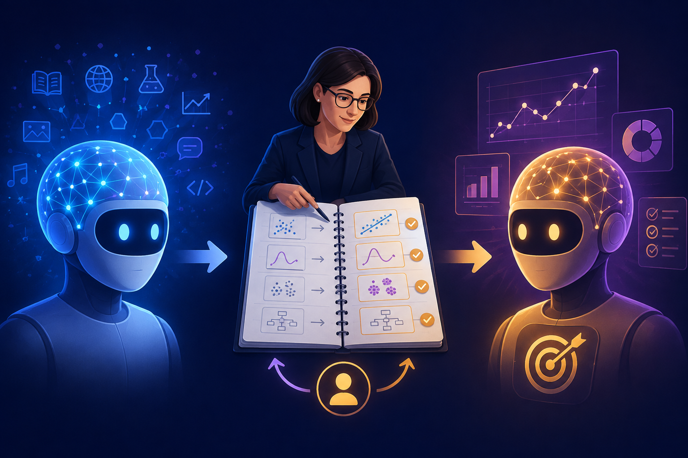

← LLMs & Transformers02 · LLMs & Transformers
What is Fine-tuning?
Fine-tuning is additional training that adapts a pre-trained model for a more specific behavior or task.
What is it?
Fine-tuning is additional training that adapts a pre-trained model for a more specific behavior or task.
It starts from an existing model and continues training on focused examples. Some methods update model parameters directly; others train adapters.
Think of it like...
Think of it like specialist training after general education. The learner builds on broad skills instead of starting from zero.

Fine-tuning focuses a capable base model on a target behavior.How it works
A base model is exposed to target examples. Training updates selected values, then evaluation checks the result.
1 · Base modelStart with broad skillsLoad a pre-trained model.
2 · Target examplesShow desired behaviorPrepare focused input and output examples.
3 · Additional trainingUpdate valuesTrain parameters or adapters on the examples.
4 · Specialized modelUse adapted behaviorThe model becomes more consistent for the target task.
5 · EvaluationCheck regressionsTest quality, safety, and general behavior.
Real-world examples
Support classification
Input: A customer ticket
System: Examples pair tickets with desired labels
Output: More consistent categories
Writing style
Input: A draft request
System: Examples demonstrate tone and format
Output: A more consistent draft
Structured output
Input: A document
System: Examples show the target schema
Output: More predictable fields
What it is NOT
Fine-tuning ≠ Pre-training
Fine-tuning: Targeted additional training
Pre-training: Broad initial training
Fine-tuning ≠ Prompting
Fine-tuning: Changes learned behavior through training
Prompting: Changes instructions at runtime
Fine-tuning ≠ RAG
Fine-tuning: Adapts model behavior
RAG: Retrieves external information at query time
Related concepts
Pre-training → Base model → Fine-tuning → Specialized behavior
Prompting, RAG, and fine-tuning are different adaptation choices.
Explore next
Remember this
Fine-tuning is additional training that makes a pre-trained model more consistent for a specific behavior or task.
Independent video · Azure Neural voice
Video
specialist training · target examples · evaluationMP4 · H.264 + AAC